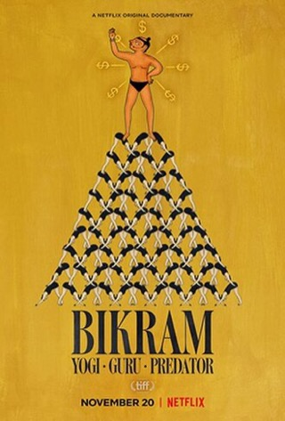

About the film

BIKRAM: YOGI, GURU, PREDATOR examines the dramatic rise and fall of the controversial founder of hot yoga, Bikram Choudhury. Arriving in Beverly Hills from Calcutta, India in the early 1970s, Choudhury quickly cultivated a celebrity following and built a global fitness empire that furnished him with extreme wealth. But by the 2010s, as numerous sexual abuse allegations emerged and stories of his aggressive, cult-like training environment surfaced, the lawsuits started to mount and Choudhury’s unorthodox teaching style became front-page news. Directed by Academy Award winner Eva Orner (Taxi to the Dark Side, Chasing Asylum) and produced by Sarah Anthony (The Price of Free, The Defiant Ones), BIKRAM: YOGI, GURU, PREDATOR shines a light on the stories of the women who took him down and explores the contradiction of how this healing discipline could simultaneously help and hurt so many.
At the festival
- 2019 DC Premiere · Sunday, October 13, 2019 · 8:00 PM · Naval Heritage CenterPost-screening discussion to follow with Julia Lowrie Henderson, creator of ESPN Bikram podcast
More films on these topics
 RescueSine Plambech2026 · 90 min
RescueSine Plambech2026 · 90 min- Short Strand: Minneapolis: On the Record + A Special ScreeningLaura Poitras, Rachel Lauren Mueller, Annie Sundberg2026
 Killing AnnaSam Benstead2026 · 76 min
Killing AnnaSam Benstead2026 · 76 min 1946: The Mistranslation That Shifted CultureSharon “Rocky” Roggio2023 · 92 min
1946: The Mistranslation That Shifted CultureSharon “Rocky” Roggio2023 · 92 min One BulletCarol Dysinger2023 · 90 min
One BulletCarol Dysinger2023 · 90 min FleeSPOTLIGHT: Flee2021 · 90 min
FleeSPOTLIGHT: Flee2021 · 90 min